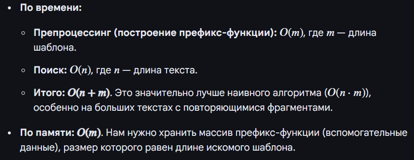
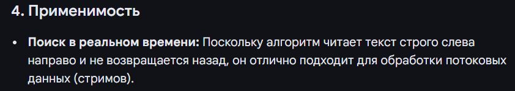
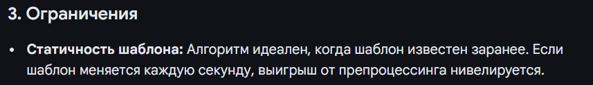
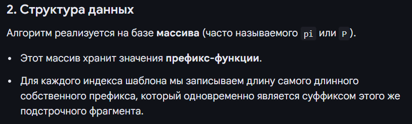
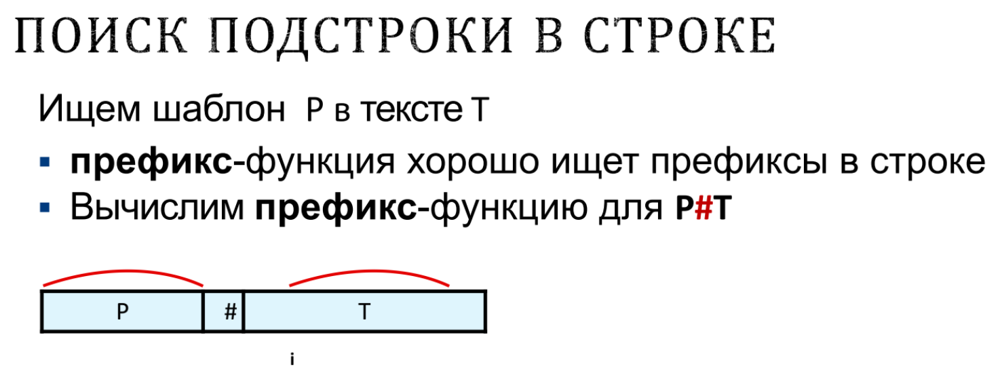
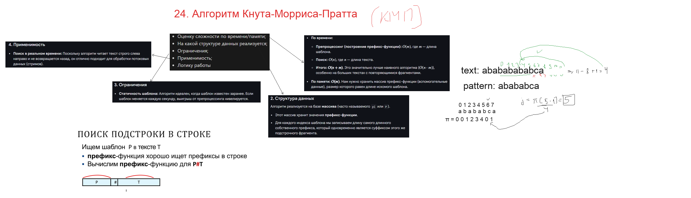

24. Алгоритм Кнута — Морриса — Пратта
Полиномиальный хеш, префикс-функция, Z-функция и строковый автомат.
Как не сравнивать всё заново
Префикс-функция π[i] — длина наибольшего собственного префикса строки s[0…i], который одновременно является её суффиксом. В КМП при несовпадении переходите от текущей длины j к π[j−1]. Так сохраняется полезная часть уже совпавших символов. После полного совпадения примените тот же переход для поиска перекрывающихся вхождений. Время O(n + m), память O(m) для шаблона.
Другие методы
- Z[i] — длина совпадения префикса строки с подстрокой, начинающейся в i. Z-алгоритм хранит самый правый известный отрезок совпадения и использует его для линейного вычисления. Для поиска можно взять
pattern + separator + text. - Рабин — Карп сравнивает полиномиальные хеши шаблона и окон текста. Хеш окна можно получать за O(1) по префиксным хешам. Совпадение хешей требует проверки символов для точного ответа. Из-за проверок худшее время может составить O(nm).
- Строковый автомат хранит длину совпавшего префикса как состояние, а переходы по буквам можно вычислить заранее через π. Для алфавита размера σ таблица занимает O(mσ), поиск по готовой таблице — O(n).
- Бор хранит общие префиксы строк в общих узлах. Терминальная отметка отличает добавленное слово от его префикса. Поиск стоит O(L) при O(1) доступе к переходу, где L — длина слова.
Материалы и примеры по пунктам
Алгоритм Кнута-Морриса-Пратта



text: abababababca

pattern: abababca

0 1 2 3 4 5 6 7
a b a b a b c a
π = 0 0 1 2 3 4 0 1

Схемы и рукописные примеры
